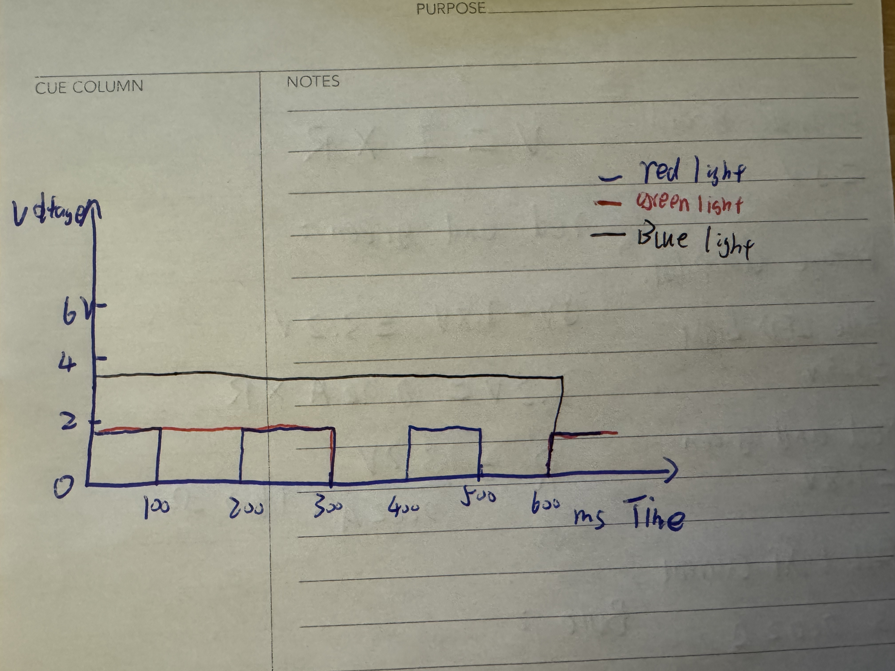

This is my circuit's operation
Here is all the documentation for assignment 1!
This is my circuit's operation
This is my Calculation formula
This is my schematic
// the setup function runs once when you press reset or power the board
void setup() {
pinMode(7, OUTPUT);// initialize digital pin 7 as an output.
pinMode(8, OUTPUT);// initialize digital pin 8 as an output.
pinMode(10, OUTPUT);// initialize digital pin 10 as an output.
}
// the loop function runs over and over again forever
void loop() {
// Turn on red LED at pin 7, turn off LEDs at pins 8 and 10
digitalWrite(7, HIGH); // Set pin 7 HIGH (turn LED on)
delay(100); // Wait for 100 milliseconds
digitalWrite(10, LOW); // Set pin 7 LOW (turn LED off)
delay(100); // Wait for 100 milliseconds
// Turn on green LED at pin 8, turn off LEDs at pins 7 and 10
digitalWrite(8, HIGH); // Set pin 8 HIGH (turn LED on)
delay(300); // Wait for 300 milliseconds
digitalWrite(8, LOW); // Set pin 8 LOW (turn LED off)
delay(300); // Wait for 300 milliseconds
// Turn on blue LED at pin 10, turn off LEDs at pins 7 and 8
digitalWrite(10, HIGH); // Set pin 10 HIGH (turn LED on)
delay(600); // Wait for 600 milliseconds
digitalWrite(10, LOW); // Set pin 10 LOW (turn LED off)
delay(600); // Wait for 600 milliseconds
}
This is my code
Qustion 1
Qustion 2
The Arduino Uno can provide about 200 mA in total, and each LED consumes 20 mA when it is on. So 200/20 = 10. The result is 10 LED lights.
Qustion 3
I test it, its 10ms